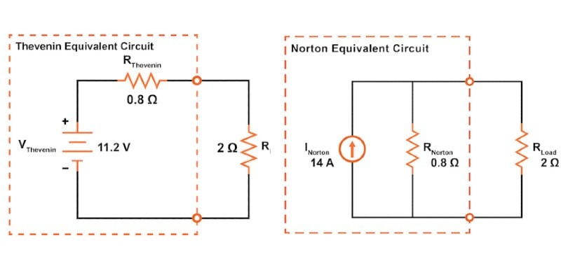
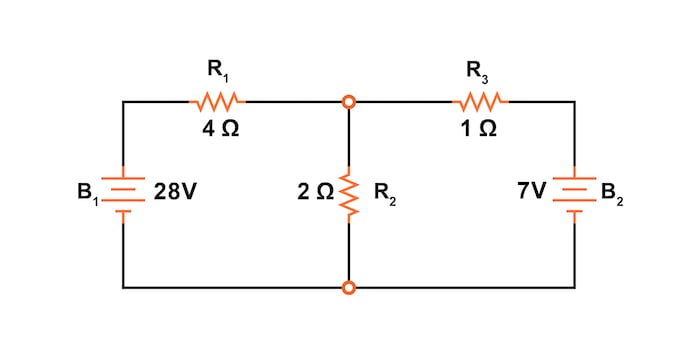
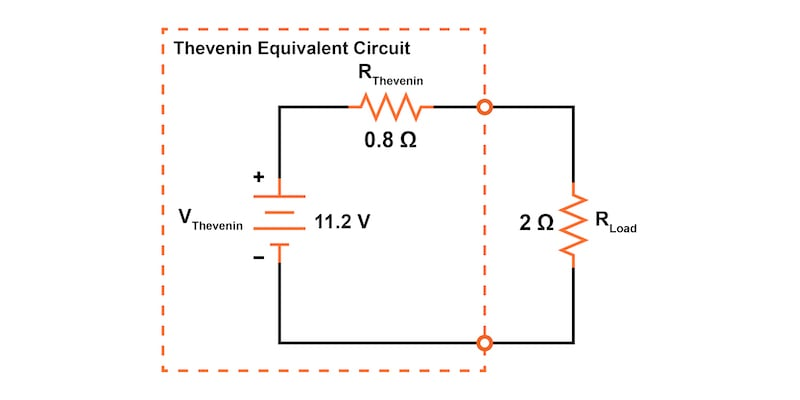
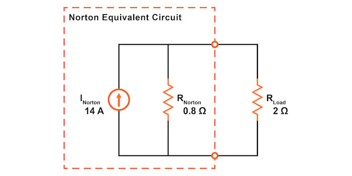

This article provides a simple explanation of how to convert between Thevenin and Norton equivalent circuits.
Since Thevenin’s theorem and Norton’s theorems are two equally valid methods of reducing a complex network down to something simpler to analyze, there must be some way to convert a Thevenin equivalent circuit to a Norton equivalent circuit and vice versa. Thankfully, the procedure is fairly simple.
Thevenin and Norton's equivalent circuits are intended to behave the same as the original network in supplying voltage and current to the load resistor (as seen from the perspective of the load connection points). Therefore, these two equivalent circuits should behave identically. We will use this principle to derive our conversions between the two equivalent circuits.
The procedure for calculating the Thevenin equivalent resistance is identical to that for calculating the Norton equivalent resistance. Below are the three main steps:
Since the procedures are identical, the Thevenin and Norton resistances for any circuit must be equal. Figure 1 is the example circuit we used when explaining how to calculate the equivalent circuits.

Figures 2 and 3 are the Thevenin and Norton equivalent circuits, respectively, for the circuit of Figure 1.


As shown, the Thevenin and Norton resistances are identical, 0.8 Ω. Therefore, we can conclude that the Norton and Thevenin resistances are equivalent:
$$R_{Thevenin} = R_{Norton}$$
Thevenin and Norton equivalent circuits should produce the same voltage across the load terminals with no load resistor attached. For the Thevenin equivalent, the open-circuited voltage would equal the Thevenin source voltage, which is 11.2 V in our example.
With the Norton equivalent circuit and no load resistor, all 14 A from the Norton current source would have to flow through the 0.8 Ω Norton resistance. The voltage at the load terminals would then also be 11.2 V:
$$V = I \cdot R = (14 \text{ A})\cdot (0.8 \text{ }\Omega) = 11.2 \text{ V}$$
Thus, we can conclude that the Thevenin voltage is equal to the Norton current multiplied by the Norton resistance:
$$V_{Thevenin} = I_{Norton} \cdot R_{Norton}$$
Thus, if we wanted to convert a Norton equivalent circuit to a Thevenin equivalent circuit, we could use the same resistance and calculate the Thevenin voltage using Ohm’s law.
Conversely, both Thevenin and Norton equivalent circuits should generate the same amount of current through a short circuit across the load terminals. With the Norton equivalent, the short-circuit current would equal the Norton source current, which is 14 A for our example circuit.
With the Thevenin equivalent, all 11.2 V would be applied across the 0.8 Ω Thevenin resistance. The current through the circuit would then be given by:
$$I = \frac{V}{R} = \frac{11.2 \text{ V}}{0.8 \text{ }\Omega} = 14 \text{ A}$$
Thus, we can say that the Norton current is equal to the Thevenin voltage divided by the Thevenin resistance:
$$I_{Norton} = \frac{V_{Thevenin}}{R_{Thevenin}}$$